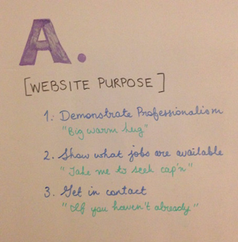

Arney Recruitment are a specialist IT recruitment consultancy based in Sydney and Adelaide. I was tasked with developing their website after a rebranding from designer Pass the Salt.
There are two major user groups that are being targeted for a recruitment consultant - the client and the candidate. The client is the company or individual who wishes to hire, and the candidate is the individual or team looking for a job. User research revealed that the website for a company like Arney Recruitment only serves a secondary resource for both the client and candidate. For the client, use of existing networks (internal and external), as well as job board services provides the primary mechanism to achieve the goal of finding the right hire. A very similar story is found for the candidate, where job boards and leveraging networks are used to successfully gain new employment.
Armed with the context, I conducted a workshop with Arney Recruitment to get a clear understanding of what the site purpose is. This was important to help develop content and flow that is fit for purpose.
Arney website purpose statement from workshop
Each purpose also is tied to a user flow:
Using the philosophy of “Don’t Make Me Think”; the website purpose statement; and an initial template starting point (below left), I worked to hone the message for each user flow interaction with the site.
An initial concept (below centre) was drafted and then working with the visual designer, the elements were arranged to the final proposal (below right).
Key changes and elements to assist with usability were:
Arney website prototyping (left) initial template; (centre) initial concept; and (right) final design.
Further user testing is slated for this project. The aim of the testing is to help test/validate the design decisions taken with regard to the three main user flows.